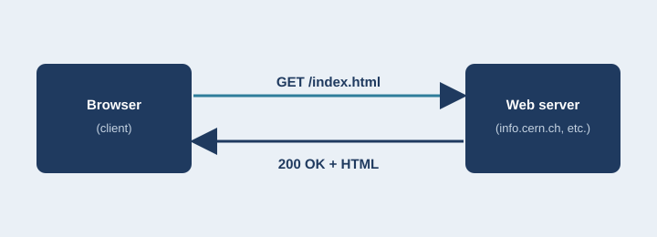

The Evolution of HTTP
From a one-line request in 1991 to the backbone of the modern internet.

Abstract
HTTP (HyperText Transfer Protocol) defines how browsers and servers communicate. Every page load, video stream, and API call travels over it. This site follows the five major versions, HTTP/0.9 through HTTP/3, and explains the problem each one solved, who built it, and how widely it is used. It is written for readers with no networking background.
Key Terms
- HTTP
- Request and response
- Status code
- Persistent connection
- Multiplexing
- Head-of-line blocking
- QUIC
- TLS / HTTPS